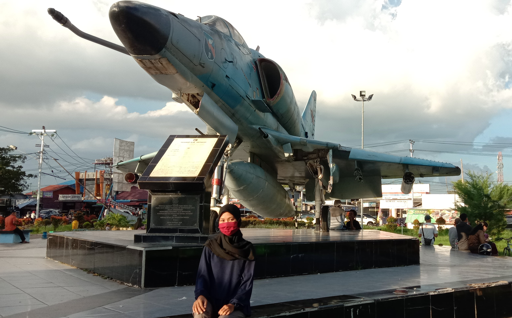

Wisata Taman Dirgantara

|
Pemkab Kubu Raya menjalin kerjasama bersama dengan Lanud Supadio Pontianak karena asetnya merupakan milik dari TNI AU, selanjutnya untuk pengelolaan tamannya nanti akan dilakukan oleh Pemkab Kubu Raya. Taman yang akan diberi nama taman Dirgantara Kubu Raya akan dikonsep taman hidup.
Selain sebagai tempat berwisata bagi masyarakat juga dapat sebagai wahana edukasi bagi anak-anak. Taman ini adalah saluh satu aset wisata yang berada di Kabupaten Kubu Raya.
Taman Dirgantara Lanud Supadio berada di Kecamatan Sungai Raya, Kabupaten Kubu Raya
|